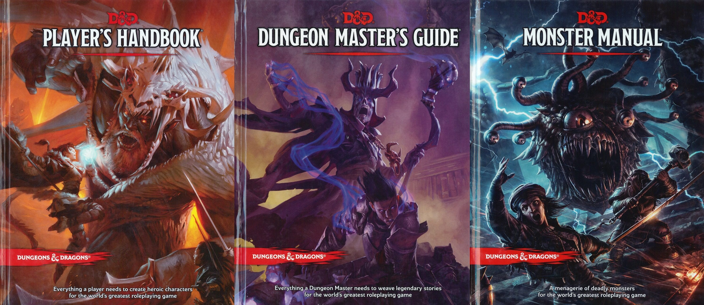

Materials used in playing Dungeons and Dragons
HANDBOOK | CHARACTER SHEET | DICE

HANDBOOKS
The Player's Handbook is the essential reference for every Dungeons & Dragons roleplayer. It contains rules for character creation and advancement, backgrounds and skills, exploration and combat, equipment, spells, and much more.

CHARACTER SHEETS
A character sheet is a record of a player character in a role-playing game, including whatever details, notes, game statistics, and background information a player would need during a play session.

DICE
Polyhedral Dice (4-, 6-, 8-, 10-, 12, and 20-sided; some people also use a 100-sided die)